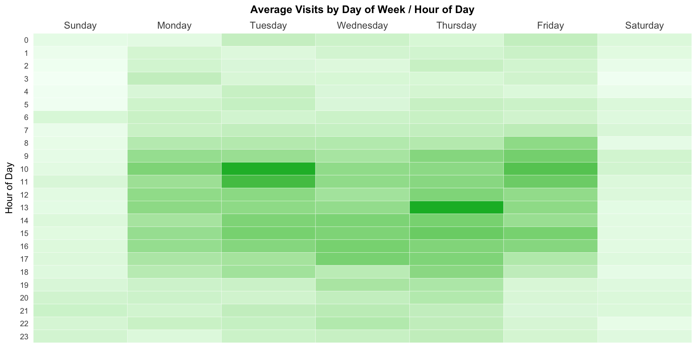
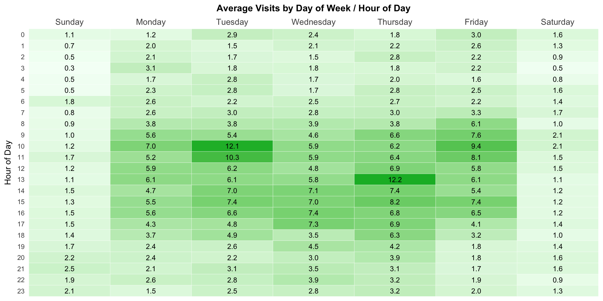
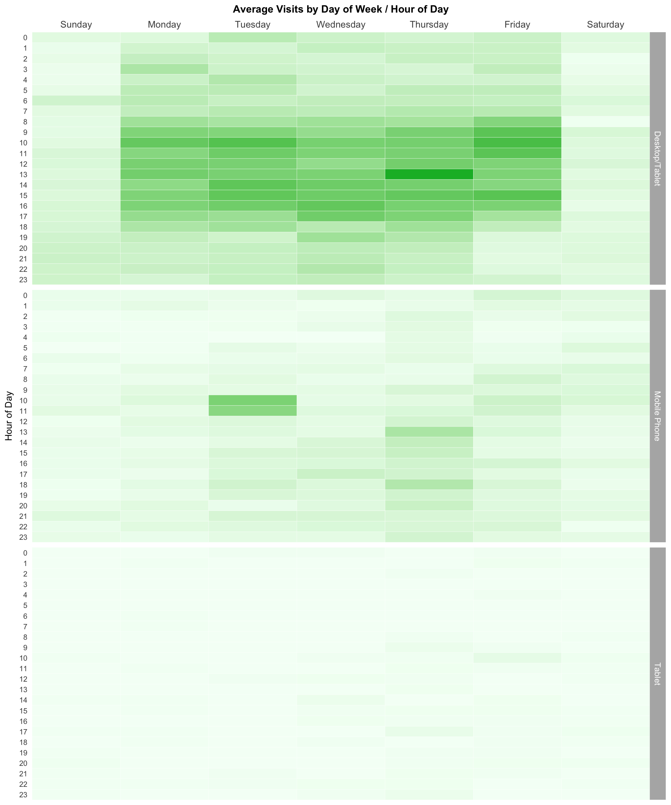

This example pulls visits by device type by hour for the last 30 days and then plots the data as a heatmap. In this example, we simply use ggplot functionality. Another approach is to use the highcharter package as described in this example.
We’re actually going to plot the average visits by hour-weekday rather than the total. Otherwise, we’d be stacking the deck for a couple of weekdays by pulling 30 days rather than a divisible-by-7 number of days.
Be sure you’ve completed the steps on the Initial Setup page before running this code.
For the setup, we’re going to load a few libraries, load our specific Adobe Analytics credentials, and then authorize with Adobe.
# Load the necessary libraries. The 'typical' way to do this is with a series of
# 'library([library name])' calls. The use of the pacman package, though, adds a
# check that will install any missing packages before then loading them.
if (!require("pacman")) install.packages("pacman")
pacman::p_load(RSiteCatalyst,
tidyverse,
jsonlite) # Needed for unbox() in examples with inline segments
# Load the username, shared secret, and report suite ID
username <- Sys.getenv("ADOBE_API_USERNAME")
secret <- Sys.getenv("ADOBE_API_SECRET")
# Authorize Adobe Aalytics.
SCAuth(username, secret)
# Set the RSID and the date range. If you want to, you can swap out the Sys.getenv()
# call and just replace that with a hardcoded value for the RSID. And, the start
# and end date are currently set to choose the last 30 days, but those can be
# hardcoded as well.
rsid <- Sys.getenv("ADOBE_RSID")
start_date <- Sys.Date() - 31 # 30 days back from yesterday
end_date <- Sys.Date() - 1 # YesterdayIf that all runs with just some messages but no errors, then you’re set for the next chunk of code: pulling the data.
This is a fairly simple query. We’re going to need both the date (to determine day of week) and the hour of the day. When we specify a date.granularity of hour, we actually get both a datetime column and an hour column returned, which actually simplifies our data munging a bit.
For giggles, we’re also going to pull the data broken out by device type so that we can do a little extra visualization. This means we’ll first have to roll up the data to remove the device type for our initial visualization, but that’s a simple enough step.
# Pull the data. See ?QueueTrended() for additional parameters.
aa_data <- QueueTrended(rsid,
date.from = start_date,
date.to = end_date,
metrics = "visits",
elements = "mobiledevicetype",
date.granularity = "hour")
# Go ahead and do a quick inspection of the data that was returned. This isn't required,
# but it's a good check along the way.
head(aa_data)| datetime | hour | name | url | visits | segment.id | segment.name |
|---|---|---|---|---|---|---|
| 2018-02-17 00:00:00 | 0 | Other | 3 | |||
| 2018-02-17 00:00:00 | 0 | Mobile Phone | 3 | |||
| 2018-02-17 00:00:00 | 0 | Tablet | 0 | |||
| 2018-02-17 01:00:00 | 1 | Other | 2 | |||
| 2018-02-17 01:00:00 | 1 | Mobile Phone | 4 | |||
| 2018-02-17 01:00:00 | 1 | Tablet | 0 |
We need to do a few things in this step:
Date instead of POSIXlt to play nice with the plotting.# Convert the datetime from POSIXlt to Date. This makes the next step smoother.
aa_data$datetime <- as.Date(aa_data$datetime)
# Add a column with the weekday and then abbreviate the weekday to be just
# the first 3 letters. Then, make that column a factor with the
# values in a specific order (the normal order for days of the week)
aa_data <- aa_data %>%
mutate(weekday = weekdays(datetime)) %>%
mutate(weekday = factor(weekday,
levels = c("Sunday", "Monday", "Tuesday", "Wednesday",
"Thursday", "Friday", "Saturday")))
# Clean up the table a bit by convering "Other" to "Desktop/Tablet" and
# then grabbing just the columns of interest.
aa_data <- aa_data %>%
mutate(Device = ifelse(name=="Other", "Desktop/Tablet", name)) %>%
select(datetime, weekday, hour, Device, visits)
# Check what it looks like now
head(aa_data)| datetime | weekday | hour | Device | visits |
|---|---|---|---|---|
| 2018-02-17 | Saturday | 0 | Desktop/Tablet | 3 |
| 2018-02-17 | Saturday | 0 | Mobile Phone | 3 |
| 2018-02-17 | Saturday | 0 | Tablet | 0 |
| 2018-02-17 | Saturday | 1 | Desktop/Tablet | 2 |
| 2018-02-17 | Saturday | 1 | Mobile Phone | 4 |
| 2018-02-17 | Saturday | 1 | Tablet | 0 |
Now, we’re going to make two sets of data from aa_data:
aa_data_devicetype – this will be a data frame for which we get the average (mean) visits for each weekday-hour-devicetype combinationaa_data_total – this will be a data frame for which we get the average visits for just each weekday-hour combination.# Group by the weekday, hour, and devicetype, and then summarise by getting the
# mean of the visits.
aa_data_devicetype <- aa_data %>%
group_by(weekday, hour, Device) %>%
summarise(visits = mean(visits))
# Do the same thing, but leave out devicetype
aa_data_totals <- aa_data %>%
group_by(weekday, hour) %>%
summarise(visits = mean(visits))
# Check what the second one looks like
head(aa_data_totals)| weekday | hour | visits |
|---|---|---|
| Sunday | 0 | 1.0666667 |
| Sunday | 1 | 0.6666667 |
| Sunday | 2 | 0.5333333 |
| Sunday | 3 | 0.3333333 |
| Sunday | 4 | 0.4666667 |
| Sunday | 5 | 0.4666667 |
This won’t be the prettiest possible plot, but we’ll do a bit of tweaking to make it “better than the defaults.”" If you want to read up more on ggplot, this page on dartistics.com is worth checking out.
# Create a theme that is a bit more friendly. This isn't required to do the visualization,
# but it's a painful heatmap to look at otherwise. We start with a minimalist theme... and
# then basically make it even more minimalist. Thank you, Tufte and Few.
theme_heatmap <- theme_light() + # Start with a minimalist theme
theme(panel.grid = element_blank(), # Remove the gridlines
panel.border = element_blank(), # Remove the border around the heatmap
plot.title = element_text(face = "bold", # Make the title bold
size = 11, # Adjust the title size
hjust = 0.5), # Center the title
axis.ticks = element_blank(), # Remove the axis tickmarks
axis.title.x = element_blank(), # Turn off the x-axis title
axis.title.y = element_text(size=10), # Adjust the size of the y-axis title
axis.text.y = element_text(size = 8), # Adjust the size of the y-axis labels
axis.text.x = element_text(size = 10), # Adjust the size of the x-axis labels
legend.position = "none") # Turn off the legend
# Create the plot.
gg <- ggplot(aa_data_totals, mapping = aes(x = weekday, y = hour,
fill = visits)) +
geom_tile(colour="white") + # This makes the heatmap (the colour is the lines in the grid)
scale_fill_gradient(low = "#f4fff6", high="#0bb730") + # The colour range to use
scale_y_reverse(breaks=c(23:0), labels=c(23:0), # Put the 0 at the top of the y-axis
expand = c(0,0)) + # Remove padding around the heatmap
scale_x_discrete(expand = c(0,0), position = "top") +
labs(title = "Average Visits by Day of Week / Hour of Day", y = "Hour of Day") +
theme_heatmap # Apply the theme defined earlier for styling
# Output the plot. You *could* just remove the "gg <-" in the code above, but it's
# generally a best practice to create a plot object and then output it, rather than
# outputting it on the fly.
print(gg)
If we wanted to see the actual average visits within the cells, we can take the plot object (gg) we created already and just extend it a little bit by adding geom_text() to it.
# Make a new plot object that adds text in the cells
gg_labeled <- gg +
geom_text(aes(label = sprintf("%.1f", visits)), # sprintf formats to 2 decimals
size = 3) # And we need to tweak the font size
# Output that object
print(gg_labeled)
Alternatively, we can quickly make three heatmaps as “facets” – one for each device type. We’ll use the aa_data_devicetype for this, but, other than adding a facet_grid component, it’s pretty much the same as the original heatmap (and we can use the theme we already defined). Notice how the shading is based on all of the plots. Since there is very little traffic from tablets, there is no real “peak” time relative to all traffic.
# Create the plot.
gg_devicetype <- ggplot(aa_data_devicetype, mapping = aes(x = weekday, y = hour,
fill = visits)) +
geom_tile(colour="white") +
scale_fill_gradient(low = "#f4fff6", high="#0bb730") +
scale_y_reverse(breaks=c(23:0), labels=c(23:0),
expand = c(0,0)) +
scale_x_discrete(expand = c(0,0), position = "top") +
labs(title = "Average Visits by Day of Week / Hour of Day", y = "Hour of Day") +
facet_grid(Device ~ .) + # This is the sole addition to the plot
theme_heatmap
# Output the plot.
print(gg_devicetype)
This site is a sub-site to dartistics.com